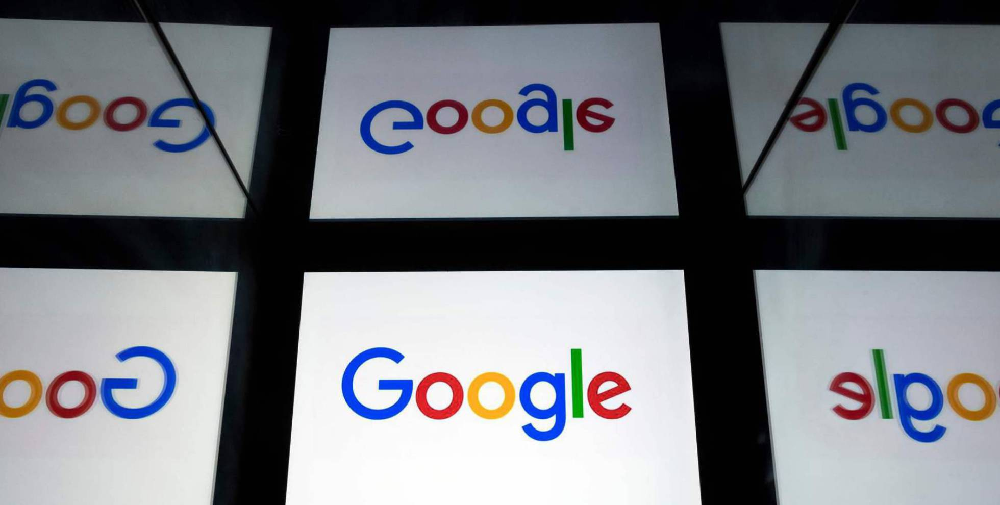

Sanidad notifica 1.229 casos de covid, nuevo récord desde el final del estado de alarma
En total, en Andalucía ya se han diagnosticado a 14.924 personas con covid-19; en Aragón a 12.167; en Asturias a 2.495; en Baleares a 2.464; en Canarias en total han dado positivo en PCR 2.623 personas; en Cantabria 2.455; en Castilla-La Mancha 18.694; y en Castilla y León 20.209. Asimismo, en Cataluña se han registrado 78.257 casos; en Ceuta 166; en la Comunidad Valenciana 13.233; en Extremadura 3.351; en Galicia 9.683; en Madrid 75.552; en Melilla 129 casos; en Murcia 2.265; en Navarra 6.630; en el País Vasco se han contabilizado ya a 15.938 personas positivas en las pruebas PCR; y en La Rioja 4.195. De los 25.419 contagios diagnosticados en los últimos 14 días, 13.391 se han notificado en la última semana. La incidencia acumulada —IA; el número de casos por cada 100.000 habitantes— de las CCAA más azotadas por los nuevos focos de coronavirus se dispara. Mientras el promedio nacional para los últimos 14 días sube hasta los 54,05, varios territorios superan ampliamente este valor: Aragón (361,94), Cataluña (142,00), Navarra (146,28) y País Vasco (78,50).
El beneficio de Google se hunde un 30% por el Gran Confinamiento

Facebook sube sus ingresos un 11% y gana un 98% más a pesar del boicot publicitario
Facebook anunció este jueves que entre enero y junio ganó 10.081 millones de dólares, casi el doble que en el mismo periodo del año anterior, con un claro aumento de su negocio a pesar de la crisis provocada por la pandemia del coronavirus. Durante los seis primeros meses del año, la empresa de la red social más usada del mundo facturó 36.423 millones de dólares, frente a los 31.963 millones que había ingresado en el primer semestre de 2019. En el segundo trimestre, datos a los que más atención prestaban los inversores, Facebook aumentó su facturación un 11%, hasta 18.687 millones de dólares, y tuvo un beneficio neto de 5.178 millones de dólares, una subida interanual del 98%. Los resultados de este segundo trimestre contrastan con los de hace un año, cuando la empresa vio caer sus beneficios un 50% por las provisiones para hacer frente a multimillonarias multas de los reguladores. En esta ocasión, los inversores esperaban con atención las cuentas para conocer el impacto de la pandemia del coronavirus en el negocio y la crisis no pareció pasar demasiada factura a la compañía de Mark Zuckerberg. De hecho, las medidas de confinamiento impuestas en gran parte del mundo ayudaron a Facebook a atraer a más gente e hicieron que sus usuarios activos diarios subiesen un 12% con respecto a hace un año, hasta 1.790 millones. Mientras, la red social registró en junio 2.700 millones de usuarios mensuales activos, un alza también del 12%. En total, alrededor de 3.140 millones de personas usan cada mes por lo menos uno de los principales productos de la compañía, que además de Facebook en sí, incluye Instagram, WhatsApp y Messenger. "Estamos orgullosos de que la gente pueda confiar en nuestros servicios para seguir conectada cuando no siempre pueden estar juntos en persona", destacó Zuckerberg en un comunicado. La compañía dijo que en las últimas semanas ha comenzado a ver señales de "normalización" en el aumento de usuarios, a medida que se han ido levantando medidas de confinamiento, por lo que espera que en el tercer trimestre las cifras se mantengan estables o ligeramente a la baja. La publicidad sigue siendo la principal fuente de ingresos de la empresa y, entre abril y junio, le reportó 18.321 millones de dólares, un 10% más que el año pasado. Ello, a pesar de que varias grandes empresas han decidido retirar sus anuncios de la plataforma después de que a mediados de junio activistas pusiesen en marcha una campaña para pedir a las marcas que no se promocionasen en Facebook por la desinformación y los mensajes de odio que se difunden en esa plataforma. Facebook dio a conocer sus resultados al mismo tiempo que los gigantes tecnológicos Amazon, Apple y Google y un día después de que los máximos responsables de las cuatro empresas compareciesen en la Cámara de Representantes de Estados Unidos en medio de acusaciones de posición dominante y monopolio de la bancada demócrata y críticas de censura desde los republicanos. Las cuentas superaron las expectativas del mercado y las acciones de la compañía se llegaron a disparar más de un 7% en las operaciones electrónicas posteriores al cierre de Wall Street.